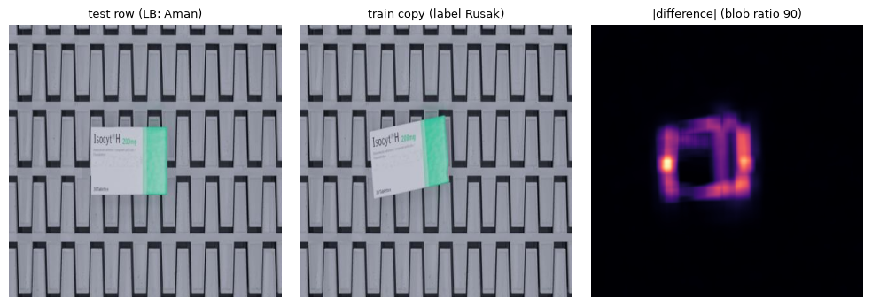

Tim: last game · Metrik: macro-F1 · Submisi terbaik: d11_lbopt, public LB 0.88891 · Private LB: (diisi setelah pengumuman)
Tugasnya mengklasifikasikan foto paket e-commerce menjadi tiga kelas: Aman, Rusak, dan Lainnya (kemasan non-standar).
Temuan inti kami: label test mengikuti konvensi per sumber data, dan konvensi itu tidak selalu sama dengan label train. Sumber data bisa dikenali dari ukuran gambarnya.
Contoh paling jelas adalah sumber 416×416 (kotak di konveyor, sintetis):
LB membuktikan baris test tersebut Aman (+0.032 saat diubah);
analisis piksel menunjukkan latar salinan train itu identik dengan gambar test; yang berbeda hanya area kotaknya (kotak di-render ulang dengan posisi/rotasi lain). Jadi label Rusak di sana adalah konvensi pembuat data sintetis, bukan kerusakan yang terlihat (bagian 3.4).
Karena itu kami tidak memakai CV di label train sebagai patokan. Patokannya adalah probe LB berpasangan dan regresi atas semua skor LB.
| Sumber | Isi | Jumlah test |
|---|---|---|
| 224×224 | semua Aman di train | 520 |
| 640×640 | foto kotak dari web | 347 |
| 675×900 / 679×900 | foto parsel VN | 280 / 30 |
| 416×416 | kotak konveyor sintetis | 193 |
| thumbnail tinggi ±251 px | — | 393 |
| long tail ratusan ukuran lain | — | — |
Duplikat lintas split. 1.129 baris test punya salinan piksel di train (NCC dihedral ≥ 0.95), dan 253 di antaranya identik byte.
Noise label. Di dalam train, 169 dari 4.401 pasangan salinan berlabel berbeda.
work/lbdelta.py, yang mengintegrasikan jumlah baris public ~ Binomial(n, 0.3).work/results.tsv).Head domain-adapted (da_h2): dilatih pada train ditambah baris test yang terkunci twin.
DINOv3-7B (6,7 miliar parameter): fine-tune 6 blok teratas + head di A100 (bf16 untuk blok beku). Inilah komponen terkuat di LB.
675×900 tanpa salinan → Aman: mengubahnya ke Rusak memberi −0.043.
Mengikuti salinan piksel di train untuk sumber lain (twin lock + head domain-adapted): +0.015 dibanding model polos (0.845 vs 0.830).
Setiap baris test kami sejajarkan dengan salinannya di train (pada orientasi dihedral terbaik), lalu kami ukur seberapa terlokalisasi selisihnya: maksimum dibagi median dari |selisih| yang di-box-filter.
| Kelompok | Rasio median |
|---|---|
| Salinan 416 berlabel Rusak | 83 |
| Salinan 416 berlabel Aman | 2,9 |
| Sumber lain | 2–9 |
Interpretasinya: salinan train 416 berlabel "Rusak" adalah gambar yang sama dengan kotak yang di-render ulang (posisi/rotasi berubah) di atas latar yang identik, sedangkan baris test adalah versi "Aman"-nya. Di sumber lain, pasangan berlabel bertentangan tidak memiliki tanda ini (640: 4,8%; lainnya: 0%), jadi konflik di sana adalah noise label biasa.

Tabel kuantisasi JPEG tiap file dihash (work/forensics.py). Hasilnya menunjukkan tiga encoder:
| Encoder | Kualitas | Isi |
|---|---|---|
q42ee3e6d |
±95 | Pipeline noise yang hampir hanya ada di train (6.670 train vs 164 test); 51% gambarnya diberi noise, dominan Aman |
q2b47ef28 |
±75 | Sumber yang di-resize (224/416/640/675/VN) |
qe7ebbc55 |
— | 95–97% Lainnya |
Di 416/675/VN, gambar train yang bersih hampir semuanya Rusak, sedangkan Aman-nya melewati pipeline noise. Akibatnya model belajar jalan pintas "bersih = Rusak", padahal seluruh test di sumber itu bersih. Inilah penjelasan mekanistik aturan 416/675.
Untuk mendeteksi jalan pintas serupa, kami membandingkan prediksi model dengan voting kNN atas kembaran SSCD:
| Kelompok | Model: Rusak | kNN: Rusak | Kebenaran |
|---|---|---|---|
| 675 tanpa salinan | 95% | 0,14 | Aman (terbukti LB) |
| 640 tanpa salinan | 95% | 0,77 | Rusak (probe d14) |
d11_lboptPrior: ridge; prior ketat hanya untuk kelompok yang sudah terbukti (675×900).
Hasil: d11 = d08 + 17 baris yang posterior-nya memilih label lain. Ekspektasi 0.8893, hasil 0.88891.
| Ide | Alasan ditolak |
|---|---|
| Relabel dengan cleanlab | LB −0.019 |
| Pseudo-label iteratif | +0.002, di bawah ambang |
| d09 (VN → Aman) | Subset-nya (d23) memberi −0.0048 |
| Membuang 211 gambar 416-Rusak dari train 7B | valF1 0.846 vs 0.882; model jadi kurang memanggil Rusak (prediksi 14,5% vs 24,4%) |
| 640 tanpa salinan → Aman (87 baris, mirip konvensi 675) | LB −0.032 (0.85698): semua baris itu memang Rusak. Ini memvalidasi uji "model vs voting kNN": di 675 keduanya tidak sepakat (konvensi berbeda), sedangkan di 640 keduanya sepakat Rusak |
| Cleaning konsensus 11 backbone (DINOv2/v3, PE, SigLIP, EVA02, CLIP, AIMv2, InternViT, ConvNeXt-B/L, EVA02-B) | Aturan ketat (≥10/11, p ≥ 0,9) mengoreksi 43 label train; aturan longgar (≥8/11, p ≥ 0,7) 602 label. Prediksi test hanya berubah ≤22 baris. Head yang dibersihkan justru makin mirip submisi final, jadi d11 sudah mencerminkan konsensus bersih |
| Melatih 7B lebih lama | F2 sudah terbaik di epoch pertama: valLoss 0.3266 → 0.3284, train acc 0.84 → 0.91. Uji cosine 4 epoch (sesi 16): val F1 0.889 → 0.892 → 0.886 untuk epoch 1–3 (epoch 4 ada di gate16.json, dataset asuudane/datascape-colab-out16), sementara train acc naik ke 0.970, jadi tidak ada perbaikan berarti |
Ada batas yang terukur: di 1.413 baris test "bebas", semua anggota blend hampir selalu sepakat. Bahkan 7B sendirian hanya mengubah 29 baris. Artinya sisa error bersifat sistematis dan tidak bisa diperbaiki dengan menambah epoch atau fold.
| Submisi | CV/OOF (label train) | Ekspektasi LB | Public LB |
|---|---|---|---|
| d04_da_bt2 | 0.932 | 0.930 | 0.84521 |
| d05_p416_allA (aturan 416) | 0.932 | 0.850 | 0.87739 |
| d08_grand_consensus (7B) | 0.957 | 0.915 | 0.88789 |
| d10_transductive | 0.983 | 0.981 | 0.88458 |
| d11_lbopt (final) | — | 0.8893 | 0.88891 |
| d14_640A (probe 640) | — | 0.8650 | 0.85698 |
Ekspektasi dari probe LB berpasangan pada base yang sudah punya skor meleset ≤ 0.006 (d06_cur_A −0.004, d06_F1_AR25 −0.0055, d11 −0.0004). Pengecualiannya adalah probe sumber p416/p675: keduanya sengaja dibuat untuk mengukur proporsi label yang belum diketahui, sehingga ekspektasinya hanya titik tengah. Sebaliknya, ekspektasi dari CV label train meleset 0.03–0.10.
Untuk mendekati skor teratas (±0.98) diperlukan konvensi kelompok lain seperti 416, di wilayah tempat semua model sepakat. Cara menemukannya adalah probe LB per kelompok, karena model yang lebih besar tidak membantu.
Reproduksi:
last_game_Notebook_Datascape.ipynb (= notebook/Datascape_Pipeline.ipynb) memuat assert md5 untuk d11;python work/make_d11.py membangun ulang d11;work/lb_regress.py menjalankan regresi LB.Kode, analisis, dan write-up ini disusun dengan bantuan asisten AI Claude (Anthropic), dipakai untuk menulis kode, brainstorming, dan penyusunan dokumen.
Tidak ada LLM/VLM yang dipakai untuk inference/prediksi. Semua prediksi test dibuat secara programatik oleh model visi tanpa teks (DINOv3, PE-Core, SigLIP, EVA02, dan lain-lain) beserta aturan yang dihitung otomatis. Tidak ada label test yang ditentukan manual.